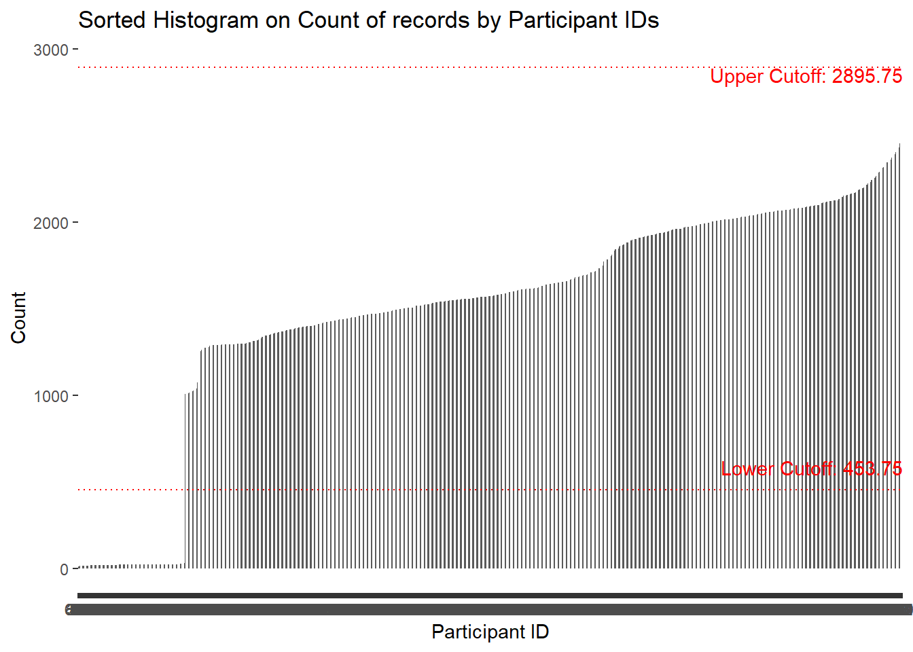

Show the code
pacman::p_load(rstatix, gt,visNetwork, patchwork, tidyverse)
financial<- read_csv("data/FinancialJournal.csv",show_col_types = FALSE)
glimpse(financial,width=NULL)joined_data <- left_join(financial, participants, by = join_by(participantId == participantId ))
glimpse(joined_data,width=NULL)Rows: 1,513,636
Columns: 10
$ participantId <dbl> 0, 0, 0, 1, 1, 1, 2, 2, 2, 3, 3, 3, 4, 4, 4, 5, 5, 5, 6…
$ timestamp <dttm> 2022-03-01, 2022-03-01, 2022-03-01, 2022-03-01, 2022-0…
$ category <chr> "Wage", "Shelter", "Education", "Wage", "Shelter", "Edu…
$ amount <dbl> 2472.50756, -554.98862, -38.00538, 2046.56221, -554.988…
$ householdSize <dbl> 3, 3, 3, 3, 3, 3, 3, 3, 3, 3, 3, 3, 3, 3, 3, 3, 3, 3, 3…
$ haveKids <lgl> TRUE, TRUE, TRUE, TRUE, TRUE, TRUE, TRUE, TRUE, TRUE, T…
$ age <dbl> 36, 36, 36, 25, 25, 25, 35, 35, 35, 21, 21, 21, 43, 43,…
$ educationLevel <chr> "HighSchoolOrCollege", "HighSchoolOrCollege", "HighScho…
$ interestGroup <chr> "H", "H", "H", "B", "B", "B", "A", "A", "A", "I", "I", …
$ joviality <dbl> 0.001626703, 0.001626703, 0.001626703, 0.328086500, 0.3… participantId timestamp category amount householdSize
0 0 0 0 0
haveKids age educationLevel interestGroup joviality
0 0 0 0 0 joined_data %>%
distinct(participantId, timestamp, category, amount, householdSize, haveKids, age, educationLevel, interestGroup, joviality, .keep_all = TRUE) %>%
group_by(participantId, timestamp, category, amount, householdSize, haveKids, age, educationLevel, interestGroup, joviality) %>%
filter(n() > 1) %>%
ungroup() %>%
as_tibble()# A tibble: 0 × 10
# … with 10 variables: participantId <dbl>, timestamp <dttm>, category <chr>,
# amount <dbl>, householdSize <dbl>, haveKids <lgl>, age <dbl>,
# educationLevel <chr>, interestGroup <chr>, joviality <dbl>count_data <- joined_data %>%
count(participantId)
ggplot(count_data, aes(x = reorder(participantId, n), y = n)) +
geom_bar(stat = "identity", width = 1) +
xlab("Participant ID") +
ylab("Count") +
ggtitle("Frequency of Participant IDs") +
geom_hline(yintercept = 50, color = "red")+
theme(axis.text.x = element_blank(), # Remove y-axis tick labels
axis.ticks.x = element_blank()) # Remove y-axis ticks
# Calculate quartiles and IQR
q1 <- quantile(count_data$n, 0.25)
q3 <- quantile(count_data$n, 0.75)
iqr <- q3 - q1
# Define outlier cutoff values
lower_cutoff <- q1 - 1.5 * iqr
upper_cutoff <- q3 + 1.5 * iqr
# Identify outliers
outliers <- count_data$n[count_data$n < lower_cutoff | count_data$n > upper_cutoff]
# Display outliers
outliers [1] 15 23 22 23 18 24 22 24 14 26 24 25 18 12 20 21 22 19 16 19 21 22 21 22 23
[26] 24 26 22 24 22 17 16 24 23 24 24 21 24 23 22 22 26 21 21 24 20 22 16 22 19
[51] 26 18 17 20 22 20 22 25 11 18 22 18 22 21 21 17 23 23 24 27 23 20 22 18 20
[76] 24 23 17 23 16 24 15 24 23 24 17 20 17 23 23 24 29 17 24 16 22 16 22 14 22
[101] 21 21 14 23 18 23 22 22 14 15 11 18 18 22 18 22 22 15 20 16 22 17 18 20 18
[126] 18 18 17 19 18 16